1. Pantalla de inicio
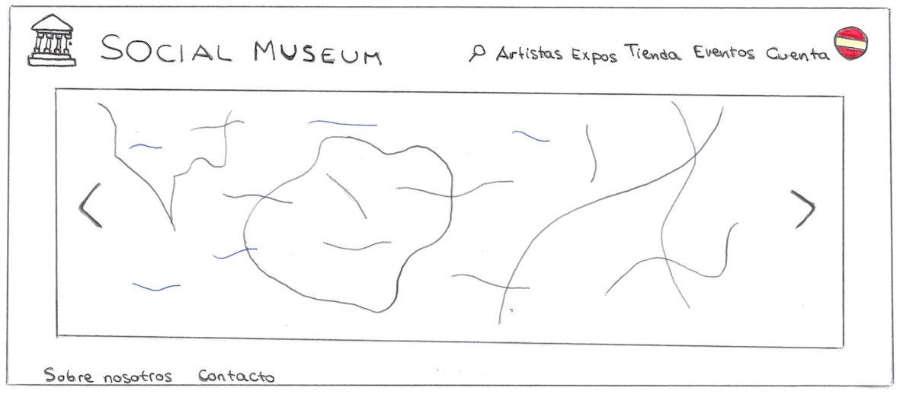Esta es la pantalla principal. En ella hay una serie de imágenes que van cambiando relacionadas con obras, artistas o exposiciones actuales del museo. Desde la pantalla principal el usuario puede acceder a cualquiera de las opciones del menú en la parte superior: Buscador, Artistas, Expos, Tienda, Eventos, Cuenta e Idioma. Este menú esta presenta en la web en todo momento. En la parte inferior también puede acceder a Sobre nosotros y a Contacto. Se puede volver a esta pantalla de inicio en cualquier momento pinchando en el nombre o logo de la web.
2. Buscador

Al pinchar la lupa en el menú desde cualquier pantalla, aparece esta página en la que aparecen los resultados que coincidan con lo escrito por el usuario. La búsqueda abarca cualquier artista, exposición, evento o artículo de la tienda. El usuario puede pinchar el resultado que le interese de la lista de resultados.
3. Artistas
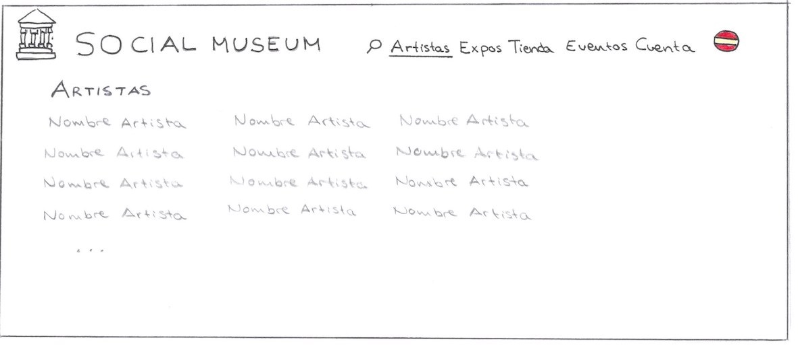Si el usuario pincha Artistas en en el menú desde cualquier pantalla aparece esta página. En ella aparece una lista con todos los artistas registrados en la web. El usuario puede pinchar el nombre de cualquier artista para entrar en su perfil.
3.1 Perfil artista
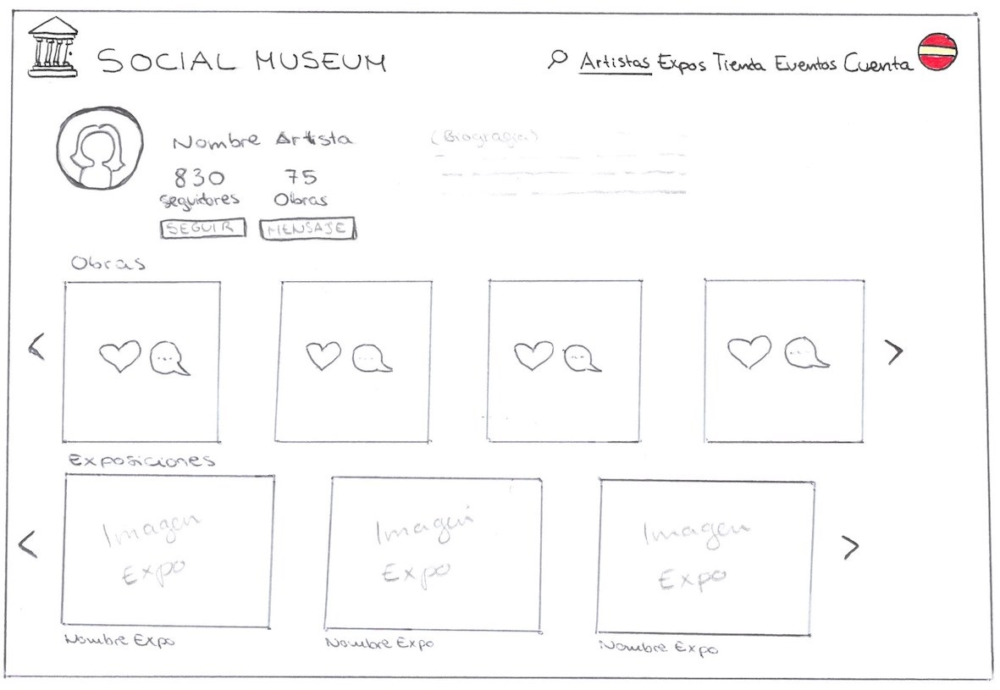Al pinchar en el nombre de cualquier artista en la pantalla Perfil artista se abre el esta pantalla. En ella hay una foto de perfil del artista, una pequeña biografía, el numero de seguidores y de obras que tiene y dos botones: uno para subscribirse/desubscribirse y otro para mandar un mensaje (solo funciona a los ya subscritos). Debajo hay una galería de imágenes con las obras del artista, que pueden ser pinchadas para ver con más detalle. También están las exposiciones actuales del museo en las que aparece alguna obra del artista, si se pincha una de ellas se abre la página de dicha exposición.
3.1.1 Detalles Obra - Artista
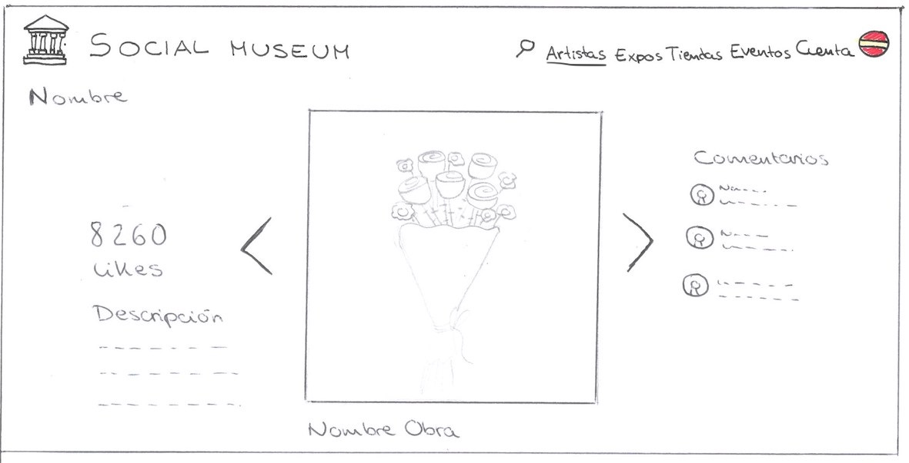Si el usuario pincha una obra desde la pantalla Perfil artista podemos ver una imagen mucho más grande de la obra con la descripción aportada por el artista. Los usuarios registrados pueden dar like a la obra y dejar comentarios en el foro. Si pincha el nombre del artista vuelve a su perfil, la pantalla Perfil artista.
4. Expos
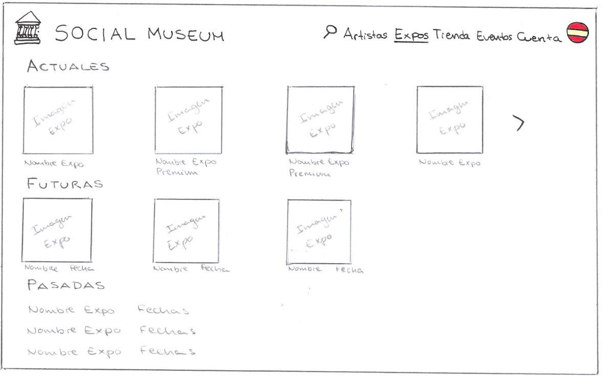Se llega a esta página pinchando Expos en el menú desde cualquier pantalla. Primero aparecen las exposiciones que están en curso en el museo (una imagen representativa, el nombre y si se trata de una exposición para clientes premium en exclusiva). El usuario puede pinchar la exposición que quiera visitar. Debajo aparecen exposiciones futuras y exposiciones pasadas a modo de información (no se pueden pinchar).
4.1.a Salas Exposición
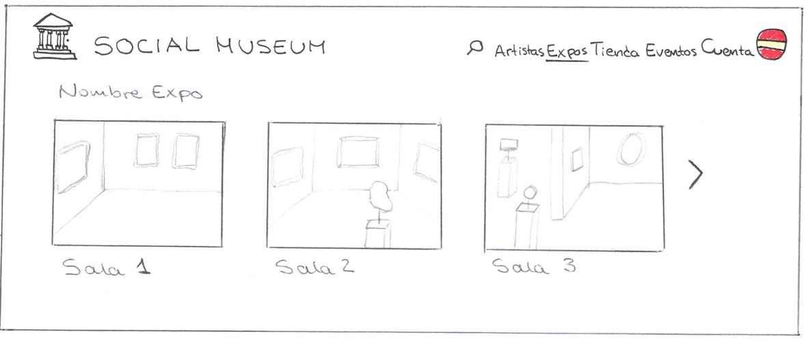Cuando el usuario selecciona la exposición que quiere visitar desde la pantalla Expos se abre esta página. En ella se puede ver el nombre de la exposición con las diferentes salas que se pueden visitar pinchándolas.
4.1.b Abrir sesión - Expo
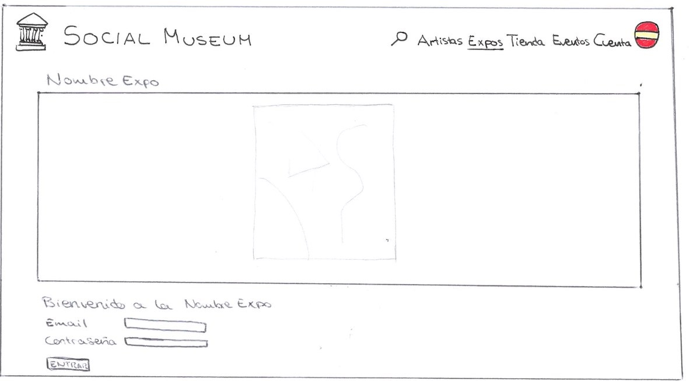Esta página aparece cuando un el usuario no ha abierto sesión y quiere visitar una exposición con acceso premium. Hay un campo de texto para introducir el email y otro para la contraseña. También hay una imagen representativa de la expo.
4.1.1 Detalles Obra - Expo
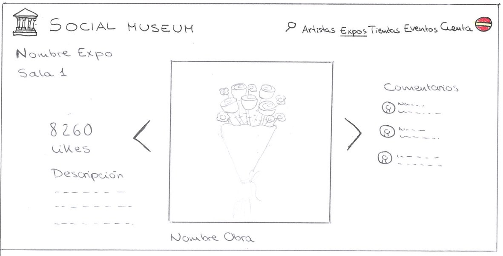Esta pantalla es muy similar a la pantalla Detalles Obra. Se diferencia en que además de la descripción aportada por el artista, hay un texto explicativo redactado por el museo sobre la obra y su aportación a la exposición en la que se muestra. Además de los likes y comentarios, el cliente puede pinchar en las flechas para cambiar de obra dentro de la misma sala.
5. Tienda
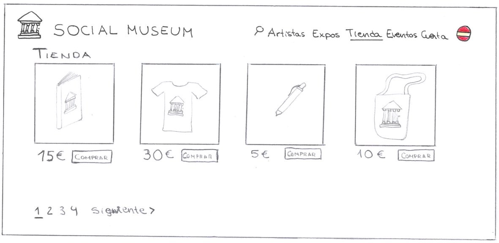Pinchando la opción tienda del menú principal llegamos a esta pantalla. En ella se muestran todos los artículos que vende el propio museo. Al pinchar en Comprar el articulo se añade al carrito de compra del usuario.
6. Eventos
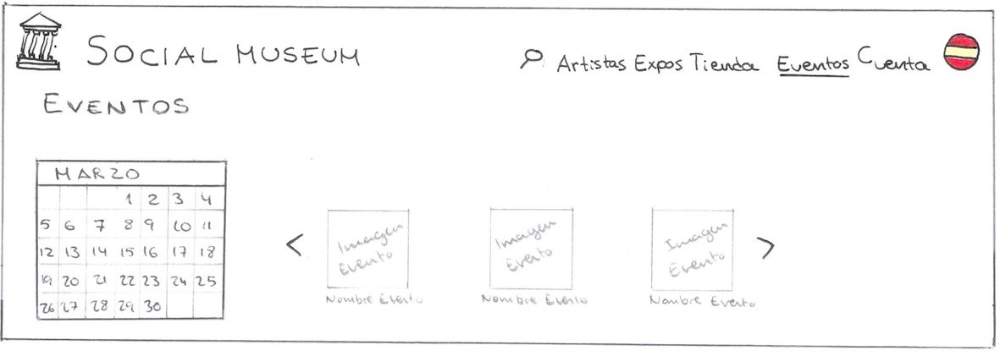Al pinchar Eventos en el menú principal el usuario llega a esta pantalla. En un primer momento aparece un calendario junto con los eventos más próximos. El usuario puede pinchar cualquier fecha en el calendario para consultar los eventos en ese día concreto. Los eventos pueden pincharse para ser dirigidos a sus respectivas páginas.
6.1.a Puja

Si el usuario pincha en la pantalla Eventos una puja, se abre esta pantalla. En ella aparecen imágenes con el nombre de las obras, el precio actual y un botón para que el cliente pueda pujar.
6.1.b Abrir sesión - Puja
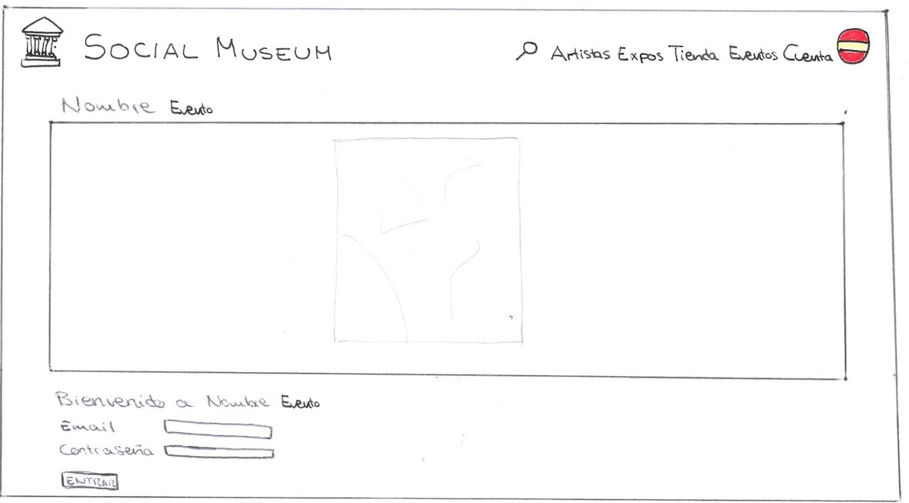Similar a la pantalla Abrir Sesión - Expo, en esta pantalla el usuario puede introducir sus datos para confirmar que es un cliente premium o un cliente regular con entrada, ya que solo ellos tiene acceso a este tipo de evento.
6.2 Concurso

FALTA
7. Cuenta

FALTA
8. Sobre nosotros
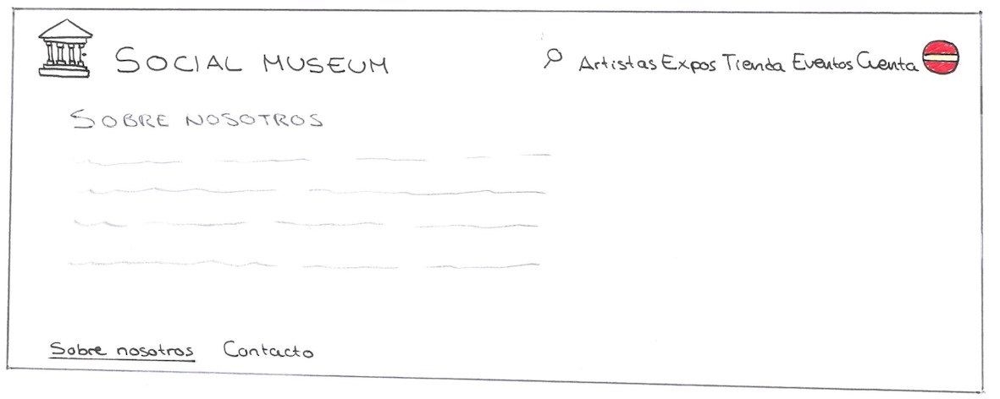Para llegar a esta pantalla el usuario pincha Sobre nosotros en Pantalla de inicio. En esta pantalla aparece una breve descripción del sitio web y sus creadores.
9. Contacto
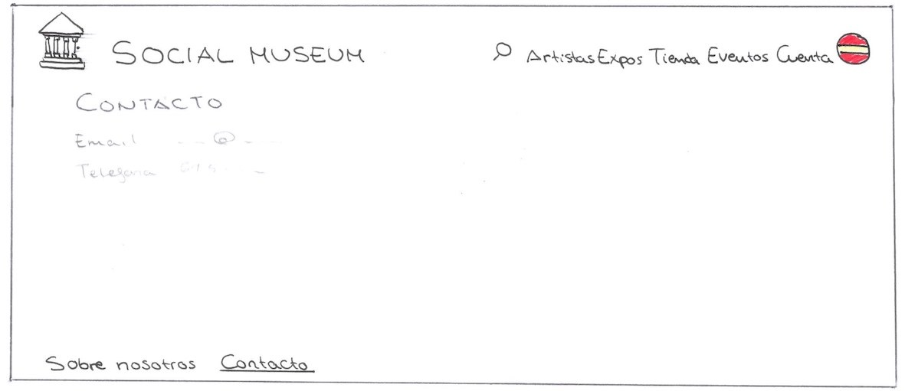Si el usuario selecciona Contacto en Pantalla de inicio se abre esta página. Hay una serie de formas de contacto con la información correspondiente (teléfono, mail, dirección…).